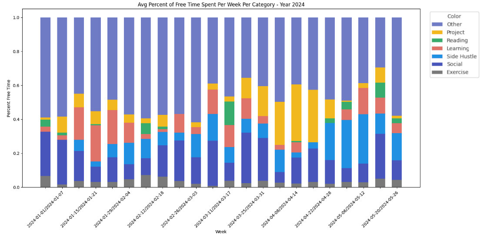

TLDR (click to show/hide)
For a while now, I've been keeping a detailed calendar for myself, both to efficiently pack my goals into relatively little free time and as a means of recording how my time was actually spent. Without much overhead (an hour or two of week total) to maintain, I've gained what I feel has been a much more productive use of my time and a sort of memex tracking what I've done over the past 2.5 years (with about 30 minute precision).
I enjoy the increased foresight that this practice has given me and its a nice bonus to be able to tell you what I was doing on any exact day at whatever exact time. I would encourage others to try keeping their own calendar with this level of detail since the benefits definitely extend beyond the workplace which people typically use them for.
An example of what my calendar looked like for some week in December of last year (with work-related and location-identifying information removed).
However, these sorts of medium-length planning and memory benefits are not what I'm writing about today. Instead, now that I've collected a good amount of this data, I'm interested in sharing some of my 'personal analytics'. That is, extracting some interesting results from my calendar data, visualizing it, and perhaps trying to infer / optimize my behavior based on what I find.
A great example of the type of article I'm writing can be found on Stephen Wolfram's blog.
The Quanitifed Self
Taking a step back for a second, this idea of personal analytics lives within a broader context of the Quantified Self, a cultural phenomenon and community of self-proclaimed 'self-trackers' who maintain detailed records of all sorts of data about themselves. The most common form that you might engage in even is fitness tracking. Calorie counting, diet apps, Apple Watches, and even pen-and-paper notes about what medications you've taken througout the week fit in this category.
There are a lot of benefits to self-tracking including personalized results, control of your own data (in some cases), and contribution to citizen science when participating in the larger community. There are some real criticisms of the practice though, aruging that the western idea of striving for the 'optimal self' inherently biases us against those that are 'non-optimal' (the poor, fat, ill, etc.). There's also a tendency among some self-trackers to realize that an obsession with this sort of behavior can detract from the overall human experience.
For some time, I did feel that maintenance of my calendar and sticking to my schedule was starting to dominate the actual experiences I had planned for myself. Reading more about the topic from books like The Quantified Self and Self-Tracking have since helped me view my calendar as more of a tool for record keeping than the sort of contractual agreement with my past self that it was becoming.
My Data
Now for the fun stuff!
I first had to pull and clean my calendar data which took quite a bit of time. Google Takeout is a handy way of getting a copy of your data from any of Google's services, but for the calendar, exports in an old ICS format that does not support color. Since I track a large portion of the categorical data for my events with color I needed to set up a GCP service account, configure OAuth credentials, and write a script to access my events (with color data) in batches. I also truncated my data to only include events since 01/01/2023 since I had some different color schemes prior to that which I didn't care to try and reconcile.
Across the 12 event types that I track (in addition to me sleeping in the negative space of the events), I counted the total number of each that occured in the last year and a half:
I also put together some colorful summary charts for the aggregated data by month and by week. The categories from bottom to top are roughly ordered according to their 'necessity' level, sleep and work being the most important and personal projects and relaxation time being less so:
The average number of hours I spent each day doing one of these 13 categories for each month in the last year and a half (2023 - mid 2024).
The average number of hours I spent in each category for each week of 2023.
These are interesting for identifying some memorable outliers like that spike of driving and sleeping I did in August of 2023 (on the second chart) which was when Linda and I made the exhausting drive back from Ann Arbor to Austin and then immediately moved into a new apartment followed by us sleeping for 12 or so hours over the next couple days. Its also easy to tell when I take a week off of work during the holidays (at the two ends of the second chart) and socialized significantly more with family and friends.
Since one of my unoffical goals has been to utilize my free time more effectively by reading, learning, and working on projects more, I decided to chop out the 'necessary' events from these charts and take a look at just my free time:
How I spent my free time in 2023.
